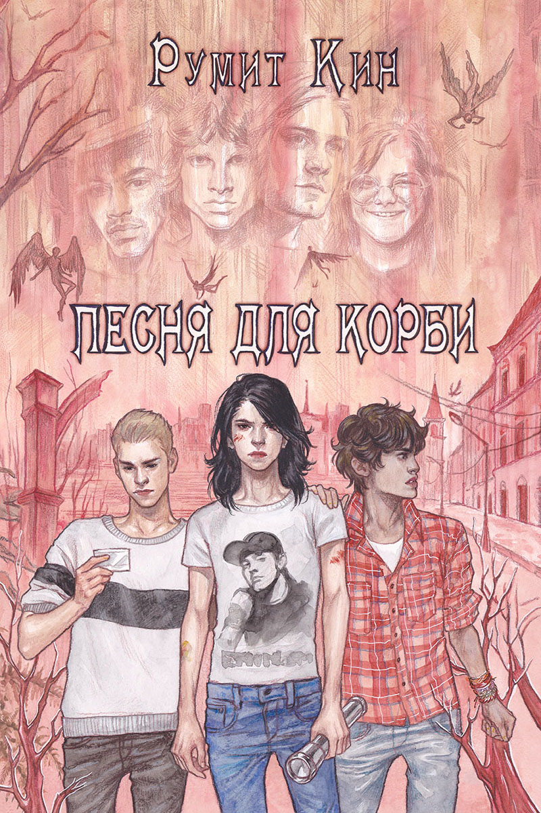

Песня для Корби
Оглавление
Пролог. На исходе ночи
Часть 1. Страный мальчик
Глава 1. Средство от пиявок
Глава 2. Реванш
Глава 3. Идиот
Глава 4. Банда
Глава 5. Второе испытание
Глава 6. Совет
Глава 7. Закат
Часть 2. Депрессия
Глава 8. Свидетели
Глава 9. Первая ложь
Глава 10. Мертвые
Глава 11. Чужое лицо
Глава 12. Срыв
Глава 13. Западный ветер
Глава 14. Озеро боли
Часть 3. Возвращение
Глава 15. Однокрылый ангел
Глава 16. Шаг в бездну
Глава 17. На перепутье
Глава 18. Новый день
Глава 19. Невесомость
Глава 20. Друзья
Глава 21. Инкогнито
Часть 4. Мелодия масок
Глава 22. Брат
Глава 23. Воссоединение
Глава 24. Драйв
Глава 25. Упущенное звено
Глава 26. Дом мрака
Глава 27. Андрей
Глава 28. Корби настоящий
Часть 5. Огонь в небе
Глава 29. Выбор
Глава 30. Дорога
Глава 31. Охотничьи угодья
Глава 32. Долины крови
Глава 33. Награда убийц
Глава 34. Эстафета прощаний
Глава 35. Огонь в небе
Эпилог. Дорога уходит вдаль
Другое
Песня для Корби
{kind=link}
Обложка. Художник А. Комбарова.
Аннотация
За несколько дней до выпускного Коля Рябин, по прозвищу Корби, заключает опрометчивое пари со своим странным одноклассником Андреем Токоминым. Поначалу все кажется не более чем игрой, и ни он, ни его друзья не подозревают, чем обернется для них эта последняя шалость их уходящего детства. Однако теперь они все связаны страшной судьбой, а смерть идет за ними по пятам.
Пролог. На исходе ночи ➥